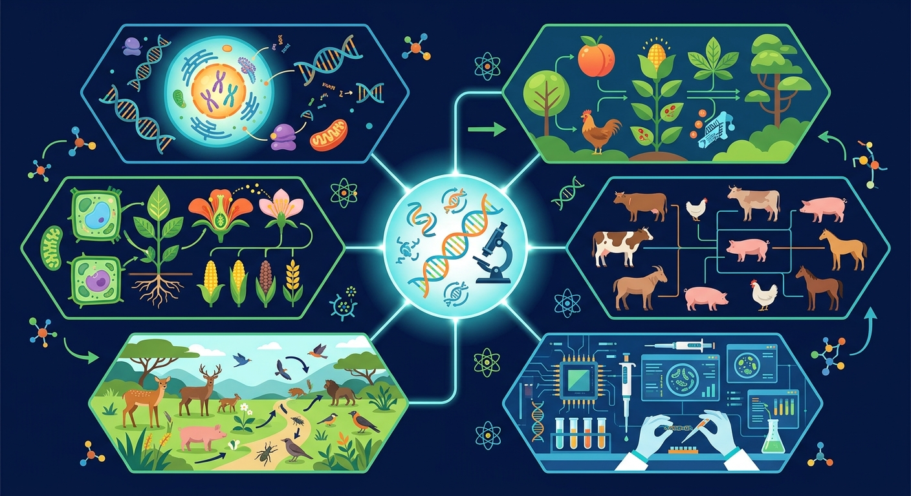

Gallery v1.0.0 · skill v7.14
个体差异怎样在环境选择下变成种群层面的改变？

先选一个卡点。后面的例子、互动和 AI 学伴都会围绕它给你最小提示。
选择或输入后，本课会围绕你的问题展开。
如果学生只说出概念名称，继续追问：题干里哪个证据最关键？这个证据对应分子、细胞、个体还是生态系统层级？如果改变 亲本基因型、变异来源、选择压力、育种周期和目标性状 中的一个条件，结果会怎样？这三问能把答案从背诵推进到科学解释。
❓ 为啥杂交育种要花好几年？
❓ 转基因和杂交哪个更'自然'？
❓ 袁隆平的超级稻为啥还要不断改良？
学完这一课，这些问题你都能自信地回答。
已经知道：此前已学过孟德尔遗传定律、基因重组和染色体变异（如三倍体无籽西瓜），理解性状由基因控制且可遗传变异
但问题是：学生常混淆杂交育种（组合现有基因）与诱变育种（创造新基因），难以理解单倍体育种如何缩短育种年限，误以为所有转基因作物都有食品安全风险
所以学：当农技站需要为盐碱地培育抗旱水稻时，需准确选择辐射诱变（创造新基因）而非杂交（依赖现有基因库），并解释为何花药离体培养能快速获得纯合体
下列哪种育种方法能最快获得纯合子？
现有高秆抗病(DDTT)和矮秆感病(ddtt)水稻，设计培育稳定遗传的矮秆抗病品种
现象入口：农业生产中会利用杂交、诱变、单倍体育种或基因工程获得新品种。
机制解释：育种本质是创造或组合遗传变异，再通过选择固定有利性状。
证据抓手：证据来自亲本性状、后代表型比例、染色体倍性和分子检测。
变量线索：亲本基因型、变异来源、选择压力、育种周期和目标性状。做题时先找变量，再判断机制，最后写证据。
情境：单倍体育种先获得单倍体再加倍，可快速得到纯合体。
作答路径：示例：杂交得F1后取花药离体培养获得单倍体（现象），秋水仙素处理使染色体加倍成纯合二倍体（机制），比常规杂交育种缩短4-5代时间（证据）。
评分提醒：典型错误：混淆育种原理（如将杂交说成突变），忽视单倍体育种需配合染色体加倍步骤，多倍体育种未明确秋水仙素作用。
观察不同育种方法培育的小麦植株形态差异，如多倍体茎秆粗壮、单倍体矮小
分解杂交育种步骤：选择亲本→人工授粉→连续自交→筛选性状
秋水仙素通过抑制纺锤体形成，使染色体数目加倍形成多倍体
用单倍体育种技术快速培育抗病水稻新品种

比较杂交育种、诱变育种和基因工程育种，要看速度、精确度和风险。
提交后会检查你的解释是否包含现象、机制和变量。
杂交育种周期长，单倍体育种通过花药离体培养+染色体加倍把纯合化时间压缩到约 2 年——这就是它“明显缩短育种年限”的含义。
💡 探究任务：对比四种方法获得稳定纯合品种的大致年限，解释单倍体育种缩短年限的原理。
关于育种原理表述正确的是？
先独立作答，再点选项查看对错与错因。
下列哪种育种方法能最快获得抗倒伏水稻纯合体？
用γ射线处理水稻种子培育新品种属于
将抗倒伏基因转入水稻运用的技术是
杂交育种的理论基础是____定律
答案：基因重组
通过基因重组组合优良性状
太空育种利用____环境诱导突变
答案：B
利用物理因素诱导基因突变
某育种项目需在2年内获得稳定遗传的抗病品种，最可能采用的方法是？
学习小结：五种育种方法的核心差异在于原理：杂交依赖基因重组，单倍体/多倍体操作染色体，诱变利用突变，基因工程定向改造DNA。
把所有育种方法都说成杂交，忽略变异来源和选择过程。
只说“增加/减少”不够，要写清改变的是 亲本基因型、变异来源、选择压力、育种周期和目标性状 中的哪一个。
没有实验现象、曲线趋势或结构证据，答案就像猜测。
✅ 需连续自交6-8代使性状稳定
💡 混淆F1代杂种优势与纯合品种
✅ 多数转的是其他植物抗病基因
💡 媒体夸大报道导致认知偏差
口诀：杂交选优多代传，诱变加速靠射线
类比：育种像调鸡尾酒：杂交是混搭基酒，转基因是加风味糖浆
视频用语音和动态画面回顾本课主线：问题情境 → 机制模型 → 证据判断 → 迁移应用。
用 PhET 观察环境压力如何改变种群中不同表型个体的比例，再讨论它和 育种 的关系。
💡 操作提示：改变环境、捕食者或突变条件，记录种群数量曲线，判断哪些变化是个体层面，哪些是种群层面。
写出杂交育种与诱变育种的原理差异
分析用秋水仙素处理西瓜幼苗获得无籽西瓜的育种原理
设计用转基因技术使水稻抗虫的育种流程（2步）